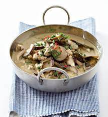

Chicken and brinjal curry

Woolworths is committed to sustainability via our good business journey. Seasonal (and other) products might not always be in stock.
Ingredients
- 1 x 400 g can coconut milk
- 1 sachet Thai green curry paste
- 400 g baby brinjals, sliced
- 1 cup chicken stock
- 7-8 Thai lime leaves
- 400 g skinless chicken breasts, thinly sliced
- 4 T fish sauce
- Salt, to taste
- 1 T sugar
- 4 T tamarind sauce
- 1 large mild chilli, sliced
- Coriander, chopped, to garnish
- Thai rice noodles or jasmine rice, steamed, for serving
COOKING INSTRUCTIONS
- Spoon the thick layer of cream off the top of the coconut milk. Add the cream to a pan over a medium heat, then stir in the curry paste and cook for a few minutes, or until fragrant.
- Pour in half the coconut milk and allow to reduce slightly. Add the brinjal, stock, remaining coconut milk and lime leaves and simmer for 10 to 15 minutes, or until the brinjal is tender.
- Add the chicken, fish sauce, a good pinch of salt, sugar and the tamarind sauce.
- Cover and simmer for 5 minutes, or until the chicken is just tender but still moist.
- Add the chilli and coriander and simmer for barely a minute.
- Serve with Thai rice noodles or steamed jasmine rice.
Cook’s notes: Use Thai basil leaves in place of coriander and add more vegetables, such as mangetout or shelled peas, if you fancy. This meal also works well with fish instead of chicken.
Per serving: 1945.3 kJ, 30.3 g protein, 20.4 g fat, 37.3 g carbs